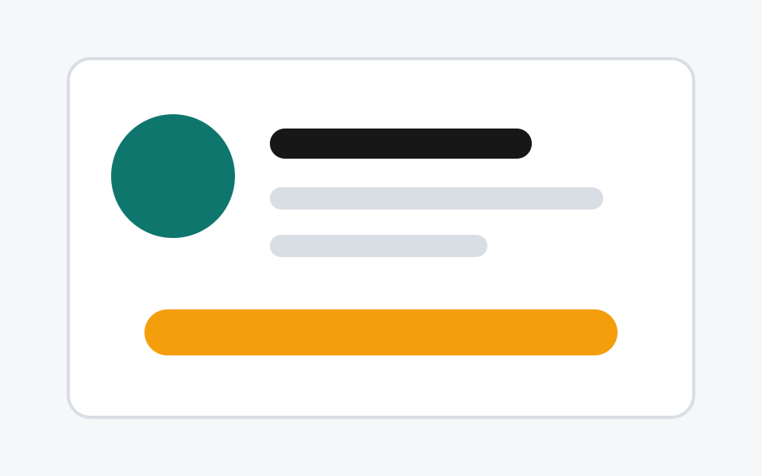
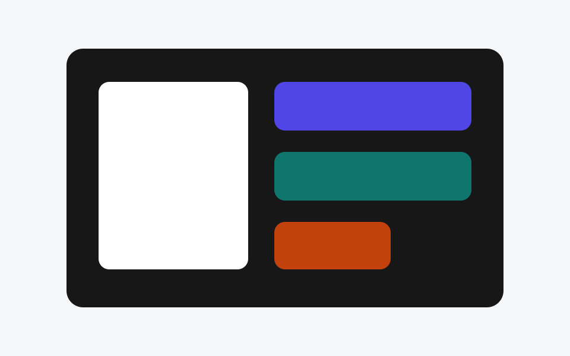
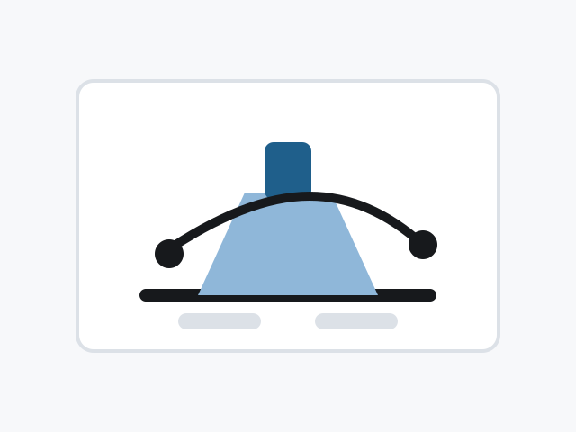

March 2026 - Present
SO-ARM101 Robot Learning
Trained real-world visuomotor pick-and-place policies and compared ACT, diffusion policies, VLA models, and DAgger on a camera-instrumented robot arm.
Selected work

March 2026 - Present
Trained real-world visuomotor pick-and-place policies and compared ACT, diffusion policies, VLA models, and DAgger on a camera-instrumented robot arm.

March 2026 - September 2026
Developing task-aware grasp planning and execution for autonomous dual-arm assembly on KUKA iiwa 7 robots.
May 2026
Built a motion-control interface for the Unitree G1 with text-prompted motion generation, MuJoCo preview, and real-robot deployment.

March 2025 - June 2025
Built a VLM agent for high-level autonomous excavator planning in Isaac Lab, with ROS 2 action servers for low-level policy execution.
Background
September 2025 - February 2026
Led a real-time visual detection, tracking, and semantic target-search pipeline for last-mile drone delivery, including model fine-tuning, Jetson AGX Orin deployment, and ROS 2 autonomy-stack integration.
July 2023 - August 2023
Performed Hardware-in-the-Loop tests on inverter units and documented validation cases for fault-handling procedures.
October 2023 - June 2024
Supported Mechanics of Solid Bodies coursework for mechanical engineering students.
Education and skills
ETH Zurich
MSc Mechanical Engineering, focus on robotics
TU Vienna
BSc Mechanical Engineering, passed with distinction
Python, PyTorch, MATLAB/Simulink, C/C++, ROS 2, Isaac Lab, MuJoCo, Docker, Git
SolidWorks, Creo, Autodesk Fusion
German native, English C2